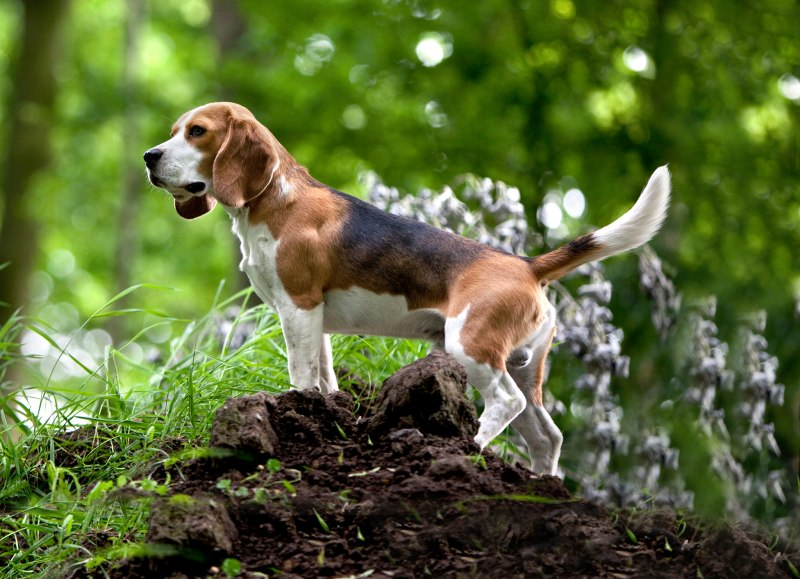
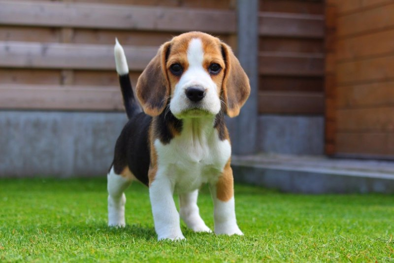
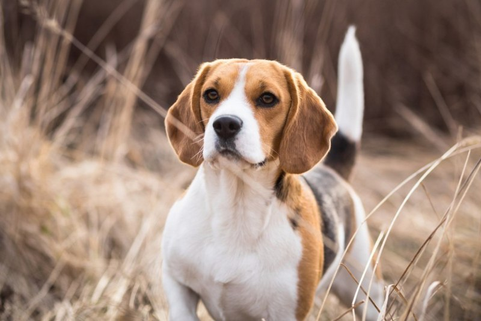
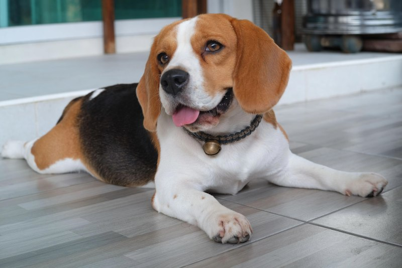

История породы: гончая, выведенная веками
Бигль — одна из старейших гончих пород Англии. Его предки — небольшие гончие собаки — сопровождали охотников ещё в Средневековье: само название породы, по одной из версий, происходит от старофранцузского «beugler» — «громко лаять». К XVIII–XIX векам в Англии сложился тип невысокой, выносливой собаки, которая работала по зайцу в стае: звонкий голос, упорство в преследовании и феноменальное чутьё сделали бигля незаменимым помощником охотников и пеших «биглёров», которым нужна была собака, способная идти рядом, а не под седлом.

Достаточно одного взгляда на бигля, чтобы понять: его «проектировали» под работу. Крепкое компактное тело, короткие сильные ноги, длинные низко посаженные уши, которые «собирают» запахи у самой земли, и обязательный белый кончик хвоста — так вожака стаи видно даже в высокой траве. Рост взрослой собаки — 33–41 см, вес — 9–14 кг: бигль достаточно крупен для прогулок в любую погоду и достаточно компактен для жизни в квартире.
Характер и темперамент
Характер бигля — это солнечный свет и лёгкий домашний хаос одновременно. Он жизнерадостен, общителен и, кажется, вообще не умеет обижаться: даже после неприятной процедуры в ветклинике он через пять минут готов облизать вас с ног до головы и дружелюбно вильнуть хвостом. При этом бигль упрям ровно настолько, насколько гениален его нос: если запах интереснее ваших указаний, он вежливо «забудет» команду, а если на кухне происходит что-то съедобное — он узнает об этом раньше вас.

Особенности содержания
Держать бигля — значит всегда помнить, что перед вами охотник, созданный для следа. Пахнущая тропа уводит его вперёд, по сторонам он не смотрит, поэтому поводок и удобная шлейка — не рекомендация, а необходимость: отпускать его можно только на огороженной территории. Дрессировать бигля лучше на угощении и позитиве — на наказании он просто перестаёт вас слышать, а вот восхитительно пахнущий кусочек лакомства делает его самым внимательным учеником в мире.
Уход за биглем не сложен, но регулярен: уши нужно проверять и прочищать, потому что длинные «лопухи» плохо вентилируются, а в сезон линьки — вычёсывать жёсткой щёткой пару раз в неделю. Отдельная тема — питание. Аппетит у бигля выдающийся, а чувствительность пищеварения — наглядная, поэтому идеальный рацион должен быть сытным по объёму, но умеренным по калорийности. Именно такую формулу мы заложили в корма БигльКорм: сытость без лишнего веса и стабильное пищеварение — то, ради чего порода нас и позвала.
Бигль и семья: дети и другие животные
Бигли — прирождённые компаньоны для семей с детьми. Они терпеливы, не склонны к агрессии и обожают быть в центре событий: играть, сопровождать на прогулке и «помогать» с домашними делами. Как стайная порода, бигль легко находит общий язык с другими собаками и уважает их границы, а при знакомстве со щенячества неплохо уживается и с кошками. Единственное, что нужно держать в уме, — охотничий инстинкт: мелкие грызуны, птицы и даже «внезапный заяц» на прогулке могут пробудить в нём древнюю гончую.
Сколько активности нужно биглю
Активность — главный пункт «бюджета» будущего владельца. Взрослому биглю нужно минимум полтора-два часа прогулок в день, и лучше — с задачами: поисковые и «нюхательные» игры, трассы со следами, аджилити или просто неспешные маршруты по новым местам. Без нагрузки бигль быстро находит себе работу сам — и расплачиваются за это тапки, провода и «перемещённые» продукты. Зато при правильном выгуле это уравновешенная, ласковая собака, которая вечером тихо свернётся у ваших ног и будет честно считать себя маленьким, хотя по громкости — большим.

